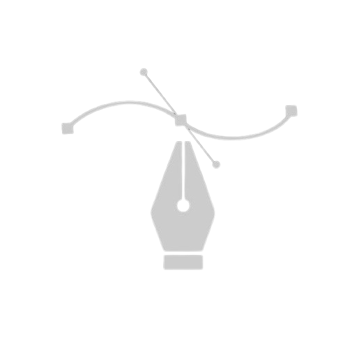

Nano Machine
Informations

Auteur: singNsong

Artiste: Undead Gamja
Après l'apparition de mystérieuses tours envahies de monstres, des humains appelés marcheurs de la tour sont choisis pour les gravir et sauver le monde. Jaehwan, l'un d'eux, refuse de fuir comme les autres et décide de continuer seul l'ascension. En affrontant d'innombrables ennemis, il découvre peu à peu la vérité cachée derrière les tours, le système et le destin de l'humanité.